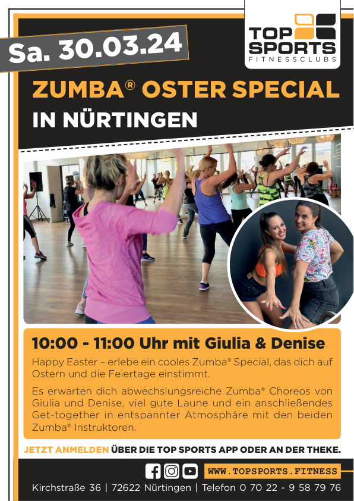

Wähle, wie viel an jeder Kante abgeschnitten wird. Größe und Drehung kannst du anschließend auf der Seite anpassen.
Nach der Formatauswahl wählst du Dateiname und Speicherort. Falls dein Browser dies nicht unterstützt, erfolgt ein normaler Download.
